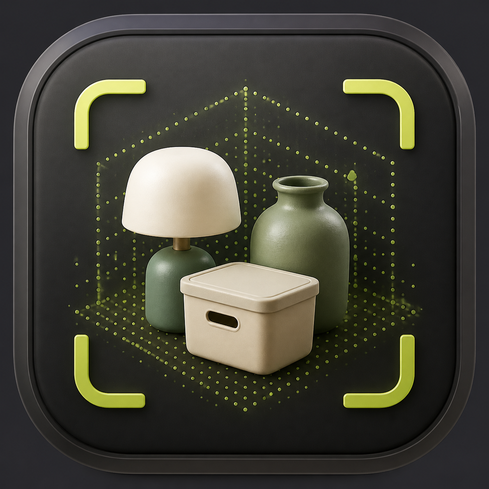
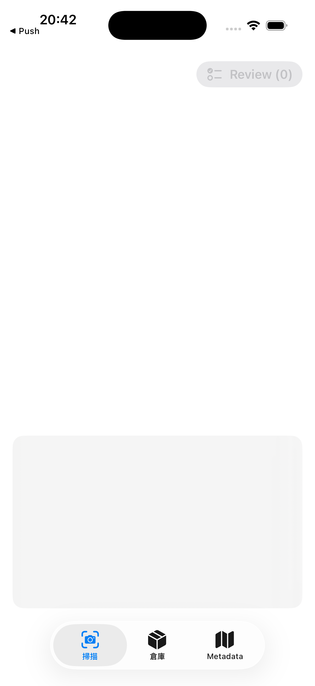

On-device recognition
Process camera, depth, OCR, visual features, and supported Foundation Models on the device.

Proof of concept · iOS 26+
Explore on-device camera, LiDAR, OCR, visual similarity, and Foundation Models for household inventory on supported iPhones.
The product mark is a release-draft asset and is not yet integrated into the current build. Public distribution remains subject to licensing, privacy, and physical-device acceptance.

Process camera, depth, OCR, visual features, and supported Foundation Models on the device.
Keep categories, balances, transactions, scan assets, samples, and map markers in the App's local data store.
Review recognized items before they enter inventory and manage independent metadata markers on a map.